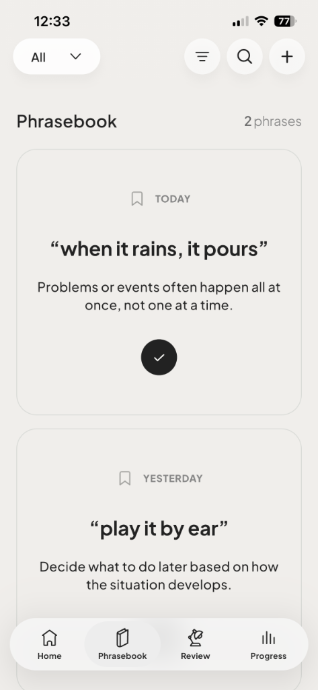
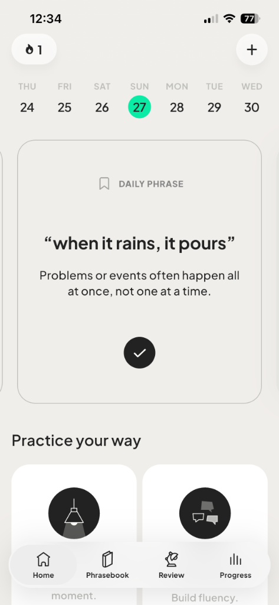
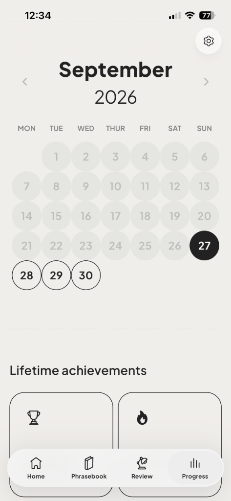
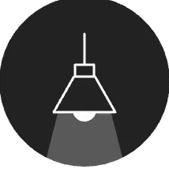
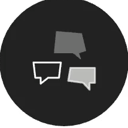
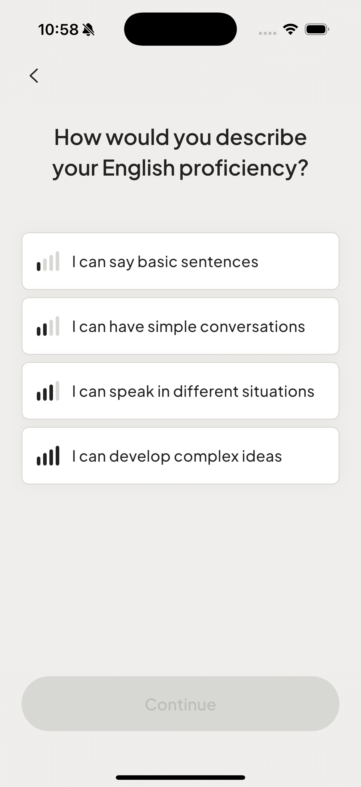
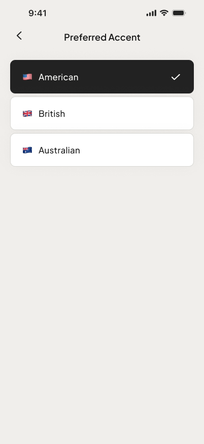

Talk to
a doctor
out loud.
Say what’s on your mind in English.
Invest a moment each day, speak naturally without hesitation.



From quick responses
to full conversations.
See what worked. Get tailored suggestions.

Practice mode
On the Spot
You won’t know what’s coming.
React in the moment. Respond on the spot.

Practice mode
Make a Conversation
Go back and forth, one turn at a time.
Keep the conversation moving.
Review
Review the conversation, anytime.
Get actionable, multi-dimensional feedback tailored to your exact phrasing.
Get ready for
casual talk.
Choose what you want to practice.
Change it anytime.
Phrasebook
One phrase a day.
More ways to connect.
A new phrase comes to you every day. Learn when to use it in conversations.
📚 Build your own Phrasebook.
Keep the phrases you want to remember, with notes that make sense to you.
✨ Smart Phrase Finder
Type what you remember. radimoo automatically finds the phrase, meaning, and context, then adds it to your Phrasebook.


Personalization
Practice at your level.
Choose your preferred accent.
Practice that fits you, from how you speak to what you hear.
Say what’s on your mind in English.
Start with one conversation today.